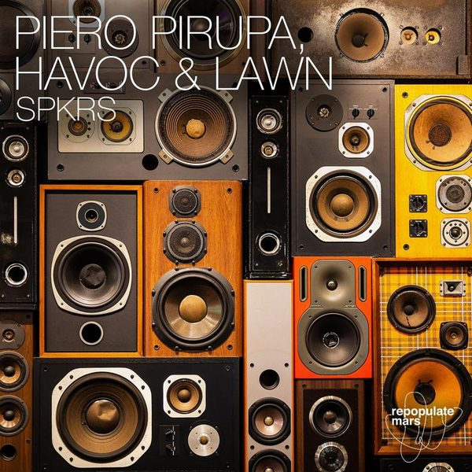

I 23 dischi
 1
KIPELEPAOLO M. & EUGENIO COLOMBO
1
KIPELEPAOLO M. & EUGENIO COLOMBO
 2
Il boom - Benny Benassi ,Riccardo Marchi remixJovanotti
2
Il boom - Benny Benassi ,Riccardo Marchi remixJovanotti
 3
Stay AwakeDon Diablo & Freak Fantastique
3
Stay AwakeDon Diablo & Freak Fantastique
 4
IN DA GETTOMATRODA x J BALVIN x SKRILLEX
4
IN DA GETTOMATRODA x J BALVIN x SKRILLEX
 5
You GetDubdogz & Volkoder
5
You GetDubdogz & Volkoder
 6
Between The Rays - Flaor Extended RemixOrjan Nilsen
6
Between The Rays - Flaor Extended RemixOrjan Nilsen
 7
Let Me DownZack Martino feat Amanda Collis
7
Let Me DownZack Martino feat Amanda Collis
 8
No More Love - Cheesecake Boys RemixCrazibiza, Ben Willis
8
No More Love - Cheesecake Boys RemixCrazibiza, Ben Willis
 9
Pull Me DownMarco Lys
9
Pull Me DownMarco Lys
 10
Do AnythingSLVR & Offrami
♪
11
To LAMorganJ
10
Do AnythingSLVR & Offrami
♪
11
To LAMorganJ
 12
By your sideRalov
12
By your sideRalov
 13
Real lifeChester Young & Kadzen
13
Real lifeChester Young & Kadzen
 14
Going DownSiwell
14
Going DownSiwell
 15
Call On MeSam Feldt
♪
16
TemporaryAtlantic Garden
15
Call On MeSam Feldt
♪
16
TemporaryAtlantic Garden
 17
Wild OnesBougenvilla & TMW
17
Wild OnesBougenvilla & TMW
 18
RockingINNDRIVE, Welker
18
RockingINNDRIVE, Welker
 19
Take MeAkiol
19
Take MeAkiol
 20
Work ItVOLAC
20
Work ItVOLAC
 21
Can't Stop NowBolier & Malarkey
21
Can't Stop NowBolier & Malarkey

22 SPRKSPiero Pirupa, Havoc & Lawn 23
La La TechMimmo Errico
23
La La TechMimmo Errico
La tracklist
- 1 KIPELE PAOLO M. & EUGENIO COLOMBO PinkStar Black
- 2 Il boom - Benny Benassi ,Riccardo Marchi remix Jovanotti Universal Music Italia
- 3 Stay Awake Don Diablo & Freak Fantastique Hexagon
- 4 IN DA GETTO MATRODA x J BALVIN x SKRILLEX White Label
- 5 You Get Dubdogz & Volkoder Musical Freedom
- 6 Between The Rays - Flaor Extended Remix Orjan Nilsen Armada Music
- 7 Let Me Down Zack Martino feat Amanda Collis Armada Music
- 8 No More Love - Cheesecake Boys Remix Crazibiza, Ben Willis PornoStar Records
- 9 Pull Me Down Marco Lys Pink Revolver
- 10 Do Anything SLVR & Offrami Spinnin' Records
- 11 To LA MorganJ Bootleg
- 12 By your side Ralov BRING THE KINGDOM
- 13 Real life Chester Young & Kadzen Sub Religion Records
- 14 Going Down Siwell Tropica Records
- 15 Call On Me Sam Feldt Heartfeldt Records
- 16 Temporary Atlantic Garden Spinnin' Records
- 17 Wild Ones Bougenvilla & TMW Spinnin' Records
- 18 Rocking INNDRIVE, Welker Hysteria Records
- 19 Take Me Akiol TM Records
- 20 Work It VOLAC Myth of NYX
- 21 Can't Stop Now Bolier & Malarkey FRCST RCRDS
- 22 SPRKS Piero Pirupa, Havoc & Lawn Repopulate Mars
- 23 La La Tech Mimmo Errico Black Lizard Records